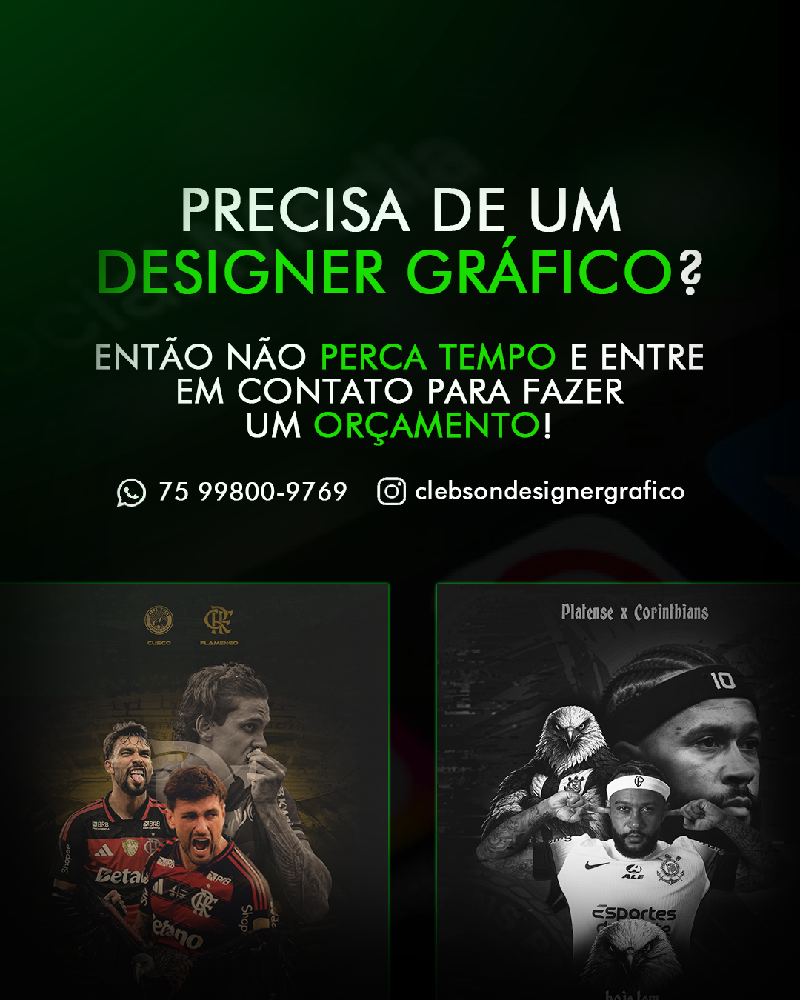

Designer gráfico em Portugal – serviços profissionais para empresas
Se procura um designer gráfico em Portugal para elevar a qualidade visual do seu negócio, está no lugar certo. Ofereço serviços completos de design gráfico para empresas de diferentes áreas, com foco em resultados, profissionalismo e comunicação eficaz.

Trabalho com a criação de conteúdos visuais para redes sociais, ajudando marcas a destacarem-se no mercado digital. Desenvolvo designs modernos, atrativos e adaptados ao público-alvo, garantindo uma presença forte e consistente online.
Design para redes sociais em diversos setores
Crio conteúdos visuais para redes sociais de praticamente qualquer setor. Cada nicho exige uma abordagem diferente, e é exatamente isso que entrego: design personalizado de acordo com o tipo de negócio.
Alguns dos setores com os quais trabalho incluem:
- Fast-food e restauração (menus, promoções, combos, take-away)
- Desporto (equipas, atletas, eventos desportivos)
- Lojas de informática e tecnologia
- Pizzarias e restaurantes
- Barbearias e salões de beleza
- Lojas de roupa e moda
- Academias e personal trainers
- Empresas locais e pequenos negócios
Independentemente do seu segmento, posso criar designs que transmitam profissionalismo e atraiam mais clientes para o seu negócio.
Cartões de visita profissionais
Além de conteúdos digitais, também desenvolvo cartões de visita personalizados. Um bom cartão de visita continua a ser uma ferramenta essencial para causar uma primeira impressão positiva.
Crio layouts modernos, elegantes e alinhados com a identidade visual da sua marca, garantindo que o seu negócio seja lembrado.
Vetorização de logótipos
Se tem um logótipo com baixa qualidade ou precisa de o utilizar em diferentes formatos, ofereço o serviço de vetorização de logótipos. Transformo imagens em ficheiros vetoriais de alta qualidade, ideais para impressão e uso profissional.
Com a vetorização, o seu logótipo pode ser redimensionado sem perder qualidade, sendo perfeito para cartões, banners, redes sociais e muito mais.
Porque escolher os meus serviços?
Trabalho com foco na qualidade, rapidez e comunicação clara. Entendo a importância de cumprir prazos e manter um bom relacionamento com os clientes.
Cada projeto é tratado com atenção aos detalhes, garantindo que o resultado final esteja alinhado com os objetivos do cliente.
Seja para redes sociais, materiais impressos ou melhoria da identidade visual, estou preparado para ajudar o seu negócio a crescer através do design.
Perguntas Frequentes
Quais serviços de design gráfico oferece em Portugal?
Ofereço serviços completos de design gráfico em Portugal, incluindo criação de conteúdos para redes sociais, cartões de visita personalizados e vetorização de logótipos. Trabalho com empresas de diversos setores, adaptando o design às necessidades de cada negócio.
Trabalha com qualquer tipo de negócio?
Sim, desenvolvo designs para diferentes áreas, como fast-food, restauração, desporto, lojas de informática, barbearias, moda, academias e outros negócios locais. Cada projeto é criado de forma personalizada.
Cria conteúdos para redes sociais?
Sim, crio designs profissionais para redes sociais como publicações promocionais, campanhas, anúncios e conteúdos visuais que ajudam a atrair mais clientes e melhorar a presença online.
Faz cartões de visita personalizados?
Sim, desenvolvo cartões de visita com design moderno e profissional, alinhados com a identidade visual da sua marca, ideais para causar uma boa primeira impressão.
O que é a vetorização de logótipos?
A vetorização consiste em transformar um logótipo em baixa qualidade num ficheiro vetorial, permitindo que seja redimensionado sem perder qualidade. É essencial para impressão e uso profissional.
Quanto tempo demora a entrega dos projetos?
O prazo depende do tipo de projeto, mas procuro sempre entregar com rapidez e dentro do prazo combinado com o cliente.
Como posso solicitar um orçamento?
Pode entrar em contacto através do site ou redes sociais para explicar o seu projeto. Responderei rapidamente com mais informações e um orçamento adequado.
Entre em contacto
Se precisa de um designer gráfico em Portugal, entre em contacto para solicitar um orçamento. Estou disponível para responder rapidamente e entender as necessidades do seu projeto.
Invista na imagem do seu negócio e destaque-se da concorrência com designs profissionais e eficazes.
Se procura outros serviços, veja também o nosso designer gráfico para desporto ou design para fast-food.